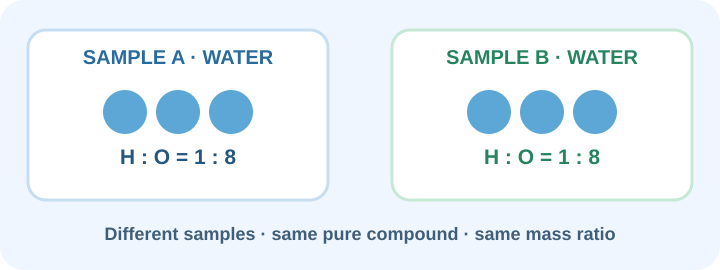

CHEMISTRY · QUICK VISUAL REVISION
Law of Definite Proportions
Also called Proust's law or the law of constant composition.
Understand the law

A pure compound always has the same elements in a fixed ratio by mass.
Proposed by: Joseph Proust (1754–1826), a French chemist.
The composition does not depend on the source or amount of a pure compound.
Worked examples
1. Water (H₂O)
H:O = 2:16 = 1:8 by mass.
In 18 g water: 2 g hydrogen + 16 g oxygen.
H:O = 2:16 = 1:8 by mass.
In 18 g water: 2 g hydrogen + 16 g oxygen.
2. Scale up the sample
If 2 g hydrogen combines with 16 g oxygen, then 4 g hydrogen combines with 32 g oxygen to form 36 g water.
If 2 g hydrogen combines with 16 g oxygen, then 4 g hydrogen combines with 32 g oxygen to form 36 g water.
3. Carbon dioxide (CO₂)
C:O = 12:32 = 3:8 by mass.
Every pure CO₂ sample has this same ratio.
C:O = 12:32 = 3:8 by mass.
Every pure CO₂ sample has this same ratio.
4. Find an unknown mass
A compound has X:Y = 2:3. If X = 10 g, then Y = 10 × 3/2 = 15 g.
A compound has X:Y = 2:3. If X = 10 g, then Y = 10 × 3/2 = 15 g.
NCERT example: Copper carbonate
Proust compared natural and synthetic cupric carbonate. Both showed the same composition by mass:
Copper: 51.35%
Carbon: 9.74%
Oxygen: 38.91%
The identical percentages support the law: the source does not change the composition of a pure compound.
Compound vs mixture
Pure compound: fixed composition by mass (e.g. pure water, CO₂, NaCl).
Mixture: variable composition (e.g. air, salt water, brass).
Do not apply the law of definite proportions to a mixture as though it were a single pure compound.
Exam quick recall
- Scientist: Joseph Proust.
- Other name: law of constant composition.
- Water H:O mass ratio = 1:8.
- CO₂ C:O mass ratio = 3:8.
- Same pure compound, same elemental mass percentages, whatever the source or sample size.
SkillUp Chemistry · Quick revision sheet